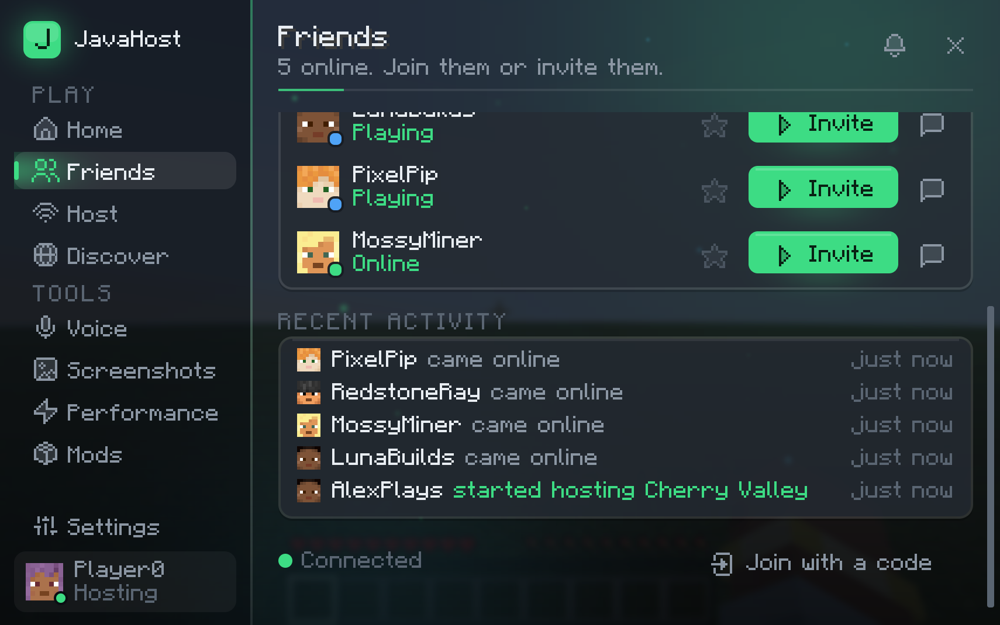

Host your world
Open any world and press Host. From the title screen it's one click: the world opens and hosting starts.
JavaHost turns your singleplayer world into one your friends can join in a click. Invites, voice chat, mods and shared packs are built in.

Your PC is the server, so there is nothing to rent and nothing to set up on your router.
Open any world and press Host. From the title screen it's one click: the world opens and hosting starts.
Add friends by their Minecraft name, then press Invite. A Join button pops up in their game. No codes to copy.
They're in. Talk with voice chat, and your resource packs and shaders come along if they want them.
Pick a world and it opens with hosting already on. Close the game and it's off again. That's the whole setup.

Add friends by name and see who's online or already hosting. One button brings them in, and one brings you to them.

Tools like this usually send every packet through a relay that may be a continent away. JavaHost connects your friend's game straight to yours whenever both routers allow it.
The 240 ms is a real measurement: a home connection in the Middle East reaching a friend in the same country through the nearest free public relay.
Voices fade with distance, so a friend across the map sounds across the map. Or switch the whole world to party voice.

Browse mods and modpacks from inside the game and install with one click. Nobody has to compare mod lists again.

Hold Z while playing for a ring of shortcuts: invite, mute, party voice, a screenshot, the invite code.
List your world for anyone to find, or join someone else's. Visitors can look around until you trust them to build.
Set game modes, kick or ban, and lock world rules like difficulty or keep inventory so they stay put.
Invites, chat and screenshots are encrypted between you and your friend. There is no JavaHost account to make.
Guests are offered your resource packs and shader settings, so everyone sees the same world you built.
Give a friend a copy of the world you're in, or a backup, without leaving the game.
Free and open source. It gets its own launcher profile, so your normal Minecraft stays untouched.
For Fabric. JavaHost keeps itself up to date. All downloads
Yes, for one-click invites, voice, shared packs and modded worlds: send them this page. Someone without it can still join with the address shown on your Host tab.
No. The installer makes a separate JavaHost profile and folder. It can copy your settings, packs and worlds over if you like.
Almost always, with nothing to configure. JavaHost first tries to connect you and your friend directly, then your router's own port opening, then IPv6, and finally a relay. The Host tab shows which ways are working.
Java Edition 1.21 to 1.21.11 and 26.1 to 26.3, with Fabric. You pick one in the installer, and each version gets its own profile. Friends need the same version to play together.
Yes. Install mods or modpacks from the Mods tab. When a friend joins your modded world, JavaHost downloads the same mods for them, restarts their game and brings them back in. Their own mods are kept safe.
Invites, chat and screenshots are encrypted with a key only you and that friend share. They are delivered through ntfy.sh, a public message service that can't read them. The game itself connects player to player.
Give the Minecraft Launcher microphone access in System Settings → Privacy & Security → Microphone, then restart the game.